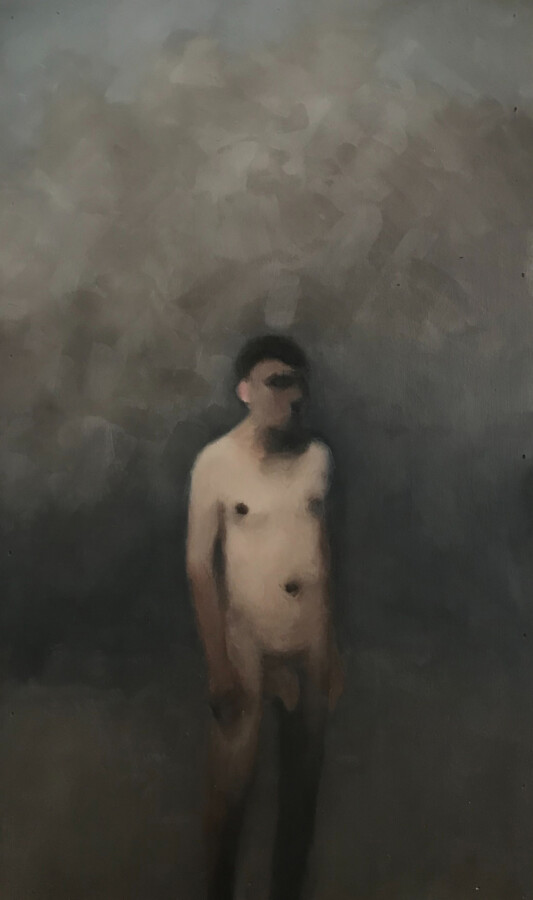

Grey James: PJOB
Grey James’ latest works are concerned with his personal experience as a trans man, having experienced significant harassment and defamation. These works have become supercharged with emotion and defiance in response to being targeted by anti-trans individuals. PJOB is an acronym for “Pink Jerkoff Boy,” the title of a painting sold in 2017 that was used by James’ tormentors as evidence of his depravity. James has repurposed this title to reclaim his power.
His paintings and mixed media works have for many years been concerned with the examination of specific motifs, such as the solitary male figure, lemons, the sky. At the center of the work is the idea of “Nothing.” As the artists observes: “there’s a lot going on in Nothing.” As banal and monotonous as that appears, there are deeper meanings that touch on age old experiences of solitude, simplicity, and the truth found in silence and the observation and contemplation of the world.